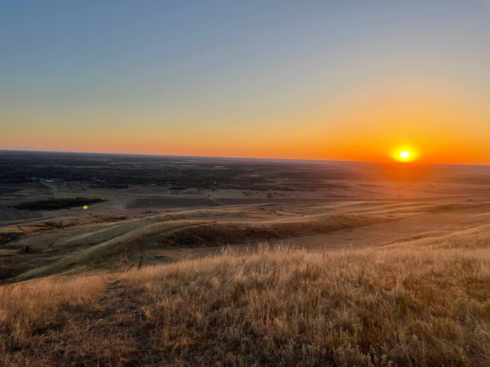

На юге Краснодарского края, в Успенском районе, стоит станица Убеженская. Когда-то здесь, на правом берегу Кубани, прятались от крепостного права беглые крестьяне — они и дали месту название: Убежище. В 1793 году Суворов, осматривая кубанское правобережье, закрепил здесь редут Убежный. А через год сюда по государеву указу переселились девять семей донских казаков — так появилась станица.
На местном кладбище до сих пор стоят каменные кресты и плиты тех первых казаков — конца XVIII и XIX века. Среди них — надгробие одного из первых переселенцев, казака Кобелькова, чьё имя нашлось в исповедной росписи 1827 года. Но большинство надгробий долгое время были скрыты под землёй — и забыты.

Вид на станицу Убеженскую, Успенский район, Краснодарский край
В 1960-х на Успенский район обрушились страшные пыльные бури. Станица стоит в так называемом «армавирском коридоре» — природном ветровом тоннеле — и досталось ей сильнее всех. Дома заносило по крышу. А на кладбище памятники ушли под двухметровый слой земли. На поверхности остались только верхушки крестов. Старинная часть кладбища заросла кустарником и была забыта на десятилетия.
В 2004 году школьный учитель истории Сергей Гайдук, занимаясь краеведением с учениками кружка «Обелиск», понял, что заросший участок на краю действующего кладбища — это старинные казачьи захоронения. Ребята расчистили первую плиту — на ней было имя «Мануйловы». А в школьном музее нашлась фотография этой семьи. Так впервые удалось связать конкретное надгробие с конкретными людьми.
Когда Сергей Гайдук стал главой Убеженского поселения, он взялся за масштабную реконструкцию. Около 70 жителей станицы — потомков тех самых казаков — вышли на работы. За два года подняли из-под земли более 40 крестов и плит XVIII–XIX веков. Каждый камень пронумеровали. Разрушенные склепы собирали по кускам. Кресты ставили на бетонные подушки, чтобы они больше не уходили в грунт.
Во время работ атаман Фёдор Медоний нашёл могилу своего предка — вдовы Харунжевой-Гетмановой (1878 год). Всего на кладбище около 1000 захоронений, но на поверхности оказались лишь около 100 — остальные до сих пор под землёй.
С 2020 года Сергей Гайдук ведёт проект «Легенды поколений» — это и генеалогия, и краеведение, и физическое восстановление некрополя. На фестивале «Быть казаком» в Усть-Лабинске (2025) историк Андрей Дюкарев назвал это примером нового подхода к казачьему наследию.
Когда мы приступили к системной оцифровке, ситуация была такой: более 40 надгробий подняты, но опознать удавалось не больше половины. Ни типологии крестов, ни координат, ни научных описаний — ничего. Аналогичных проектов по казачьим некрополям в России не существовало, поэтому мы составили свое представление о том, каким хотим его видеть мы.
С этой точки мы и начали — создав первую версию систематического каталога, GPS-карту и научное описание казачьего некрополя.
GPS-фиксация каждого объекта с точностью до метра. 78 точек зафиксировано, 74 нанесены на интерактивную карту, 19 точек обозначают границу исторического участка.
Фотофиксация всех доступных объектов. Для каждого надгробия создаётся папка с фотографиями разного ракурса.
Каталогизация: форма, материал, размеры, надписи, состояние, тип креста. 54 объекта полностью описаны в базе данных с 15 колонками.
Архивная работа: сопоставление имён на надгробиях с исповедными росписями 1827 года и метрическими книгами. 4 фамилии подтверждены документально: Мануилов, Кабельков, Сонин, Крамаров.
Agisoft Metashape (Fotoscan) — программа фотограмметрии. 30–50 снимков ортогонально поверхности камня. Результат — 3D-модель и карта высот, на которой видны надписи, не различимые глазом.
Методика рекомендована А. А. Зиганшиной из проекта «Свод русских надписей». В этом проекте аналогичный подход применяется к памятникам с 1680 года.
Проект по сохранению артефактов письменности на надгробиях XVII–XVIII веков. Используют более сложные методы, но 3D через Agisoft — доступная альтернатива для нашего масштаба.
Наиболее полный российский аналог: сайт, печатный путеводитель, виртуальный тур, 3D-модели 11 объектов, экскурсии, Telegram-канал.
Печатный каталог с фотографиями. Работа над 3D-моделями на базе ВятГУ (исследователь — Маргарита Глазырина).
Академический проект по сохранению артефактов письменности на надгробиях 1680+ годов. Методология моделирования стала основой нашего подхода.
Технически продвинутый зарубежный аналог. Профинансирован ЕС. План кладбища, 3D-модели, описания. Много крестов, похожих на убеженские.
Книга И. В. Сапожникова «Каменные кресты предместий Одессы (конец XVI – XIX вв.)» (Одесса, 1999) содержит обширную фотофиксацию и анализ казачьих надгробий. Формы крестов очень близки к убеженским — несмотря на ручную работу и отсутствие точных совпадений.
Для контраста: книга А. Л. Потравнова и Т. Ю. Хмельник описывает типологию крестов Северо-Запада России — формы сильно отличаются от южнорусских, что подчёркивает региональную специфику казачьей традиции.
Также обнаружены похожие кресты на кладбище Невинномысска — ожидаются дополнительные фотоматериалы для сравнительного анализа.
Q2 2026 — формальная классификация по форме с визуальными схемами. Сравнение с аналогами Одессы и Невинномысска. Выявление региональных закономерностей.
Подробный рассказ о Сергее Гайдуке, истории обнаружения старинного кладбища в 2004 году, находке могильной плиты Мануйловых, пыльных бурях 1960-х. На момент публикации удавалось идентифицировать максимум шесть памятников.
За два года поднято 42 могилы XVIII–XIX веков. Около 70 потомков казаков участвовали в работах. Атаман Фёдор Медоний обнаружил могилу предка — вдовы Харунжевой-Гетмановой (1878 год). Всего на кладбище около 1000 могил.
Историк Александр Лопатин упоминает убеженское кладбище как старообрядческое захоронение. Отмечается наличие кованых крестов — редкость для региона.
Историк Андрей Дюкарев отмечает проект «Легенды поколений» Сергея Гайдука как пример работы с наследием: генеалогия, краеведение и гражданский активизм в одном живом деле.
Очерк о станице Убеженской. Описаны пыльные бури конца 1960-х и работа семьи Гайдук по созданию краеведческого музея. Упоминается надгробный камень первого переселенца Кобелькова.
Официальная историческая справка о станице. Упоминается, что на местном кладбище сохранился надгробный камень казака-переселенца Кобелькова.